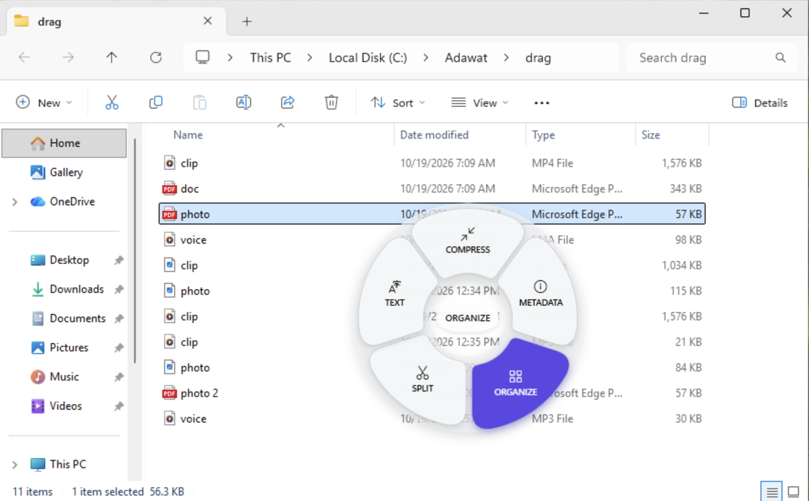
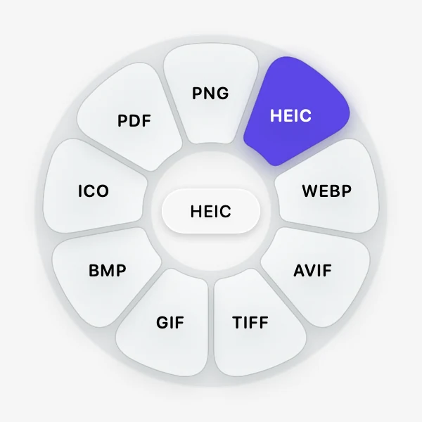
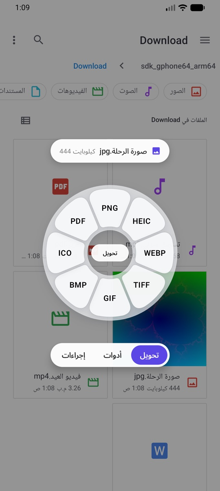
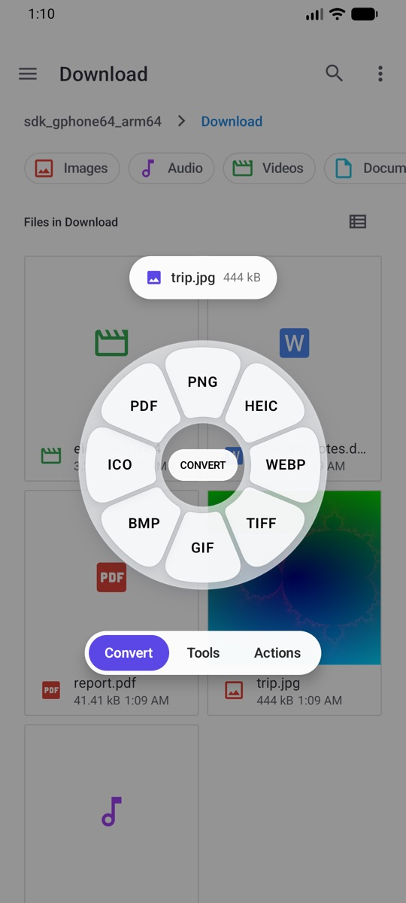
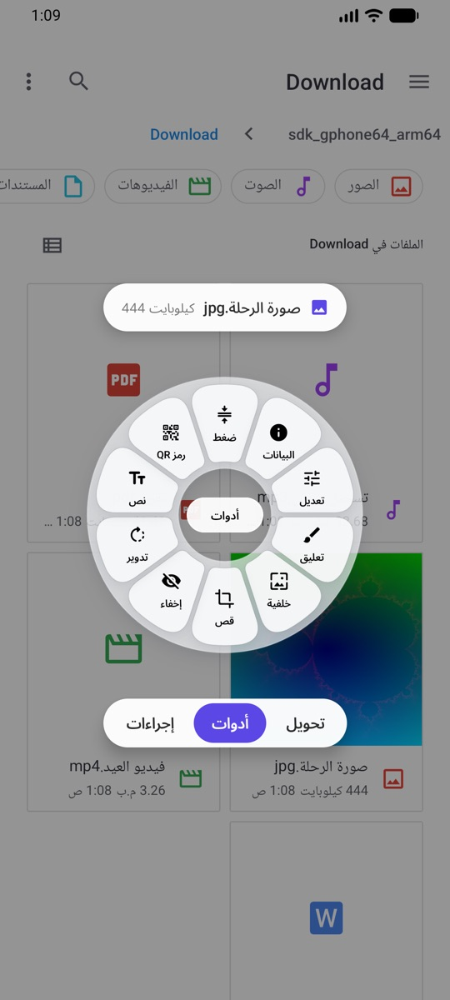
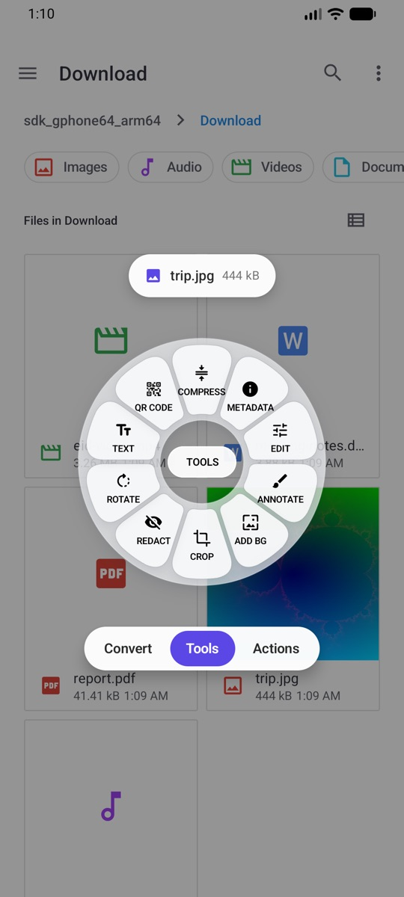
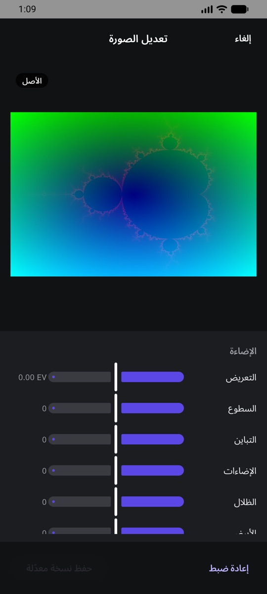
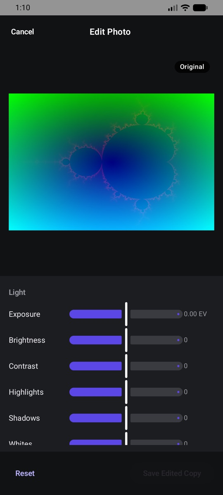
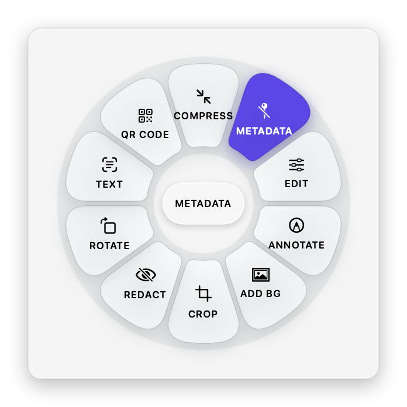

Mac⇧ShiftWinShift
عجلة التحويلConvert wheel
كل الصيغ التي يمكن أن يتحول إليها الملف.Every format the file can become.
ابدأ بسحب أي ملف، واضغط مفتاحًا، فتظهر عجلة اختيارات تحت المؤشر مباشرة. أفلت الملف على ما تريد، وتجد النتيجة بجانب الأصل. بلا رفع، ولا حساب، ولا حدود. Start dragging any file, press a key, and a wheel of choices opens right under the pointer. Drop the file on a choice and the result appears next to the original. No upload, no account, no limits.
بدأ التحميل. إذا لم يظهر الملف أو قال المتصفح إنه “isn’t commonly downloaded”، فافتح التنزيلات بـ Ctrl+J، واضغط … بجانب الملف ثم Keep (في Edge: Show more ثم Keep anyway). الملف آمن ومفتوح المصدر، لكنه غير موقّع رقميًا بعد.Your download has started. If nothing appears, or the browser says the file isn’t commonly downloaded, open your downloads with Ctrl+J, press … next to the file, then Keep (in Edge: Show more, then Keep anyway). The installer is open source but not code-signed yet.
تسجيل حقيقي من الماك: صورة PNG تُسحب، وتظهر عجلة التحويل، فتُفلت على PDF ويظهر الملف الجديد. A real recording on a Mac: a PNG is dragged, the Convert wheel opens, it is dropped on PDF and the new file appears.
تحويل، وأدوات، وإجراءات. لكل عجلة مفتاح.Convert, Tools and Actions. One key each.
صور وفيديو وصوت و PDF ومستندات وجداول وعروض وترجمة وملفات مضغوطة.Images, video, audio, PDF, documents, spreadsheets, presentations, subtitles, archives.
كل شيء يتم على جهازك. لا حساب ولا تتبّع.Everything happens on your computer. No account, no tracking.
لا نوافذ تفتحها ولا قوائم تبحث فيها. العجلة تظهر حيث يوجد الملف، وتبقى مفتوحة حتى تُفلته.No window to open, no menu to dig through. The wheel opens where the file is, and stays open until you drop.
اسحب ملفًا أو أكثر من Finder أو مستكشف الملفات أو سطح المكتب أو أي برنامج.Drag one or more files from Finder or File Explorer, the desktop, or any app.
أثناء السحب، اضغط مفتاحًا لتظهر عجلته فورًا. تبقى العجلة مفتوحة حتى تُفلت الملف.While dragging, press a key and its wheel opens right away. It stays open until you drop.
أفلت على الاختيار. تُحفظ النتيجة بجانب الملف الأصلي، أو في التنزيلات أو على سطح المكتب كما تختار.Drop on a choice. The result is saved next to the original, or in Downloads or on the Desktop, as you prefer.
كل الصيغ التي يمكن أن يتحول إليها الملف.Every format the file can become.
ضغط وتعديل وقص وترتيب وغيرها، حسب نوع الملف.Compress, edit, crop, trim, organize and more for that kind of file.
مشاركة (AirDrop على الماك)، و Float، ونسخ، ونقل، ونسخ المسار، والفتح في Terminal.Share (AirDrop on Mac), Float, Copy, Move, Copy Path, open in Terminal.
العجلات أعلاه صور حقيقية يرسمها التطبيق نفسه. ويمكنك تغيير المفاتيح من الإعدادات.The wheels above are real renders made by the app itself. The keys can be changed in Settings.
اسحب فيديو واضغط Shift، فتظهر صيغه حول المؤشر: MP4 و MKV و WEBM و GIF و MP3 و M4A. وعندما يكون ذلك ممكنًا، تُنسخ المسارات دون إعادة ترميز، فيكون التحويل سريعًا بلا فقد في الجودة.Drag a video and press Shift: its formats open around the pointer, MP4, MKV, WEBM, GIF, MP3 and M4A. When it can, Adawat copies the streams without re-encoding, so it is quick and nothing is lost.
اضغط ⌘Command أثناء السحب لتظهر أدوات هذا النوع من الملفات. للصورة: ضغط، وتعديل، وتعليق، وإضافة خلفية، وقص، وإخفاء، وتدوير، ونسخ النص، وإنشاء رمز QR، والبيانات.Press ⌘Command while dragging and the tools for that kind of file appear. For a photo: Compress, Edit, Annotate, Add Background, Crop, Redact, Rotate, Copy Text, Create QR Code and Metadata.
ضغط · دمج · ترتيب الصفحات · تقسيم · نسخ النص (OCR) · حذف البياناتCompress · Merge · Organize pages · Split · Copy Text (OCR) · Remove metadata
ضغط · قص المدة · قص الصورة · تغيير السرعة · حفظ لقطات · تقسيم · إخفاء أجزاء · دمج · كتم الصوتCompress · Trim · Crop · Change speed · Save frames · Split · Redact · Join · Mute
ضغط · قص · قص السكوت · توحيد الصوت (EBU R128) · تصفير أجزاء · فيديو بموجة الصوتCompress · Trim · Trim silence · Normalize loudness (EBU R128) · Bleep · Audio visualizer
الأدوات التي تحتاج إلى اختيارات، مثل الضغط والقص والتعديل، تفتح نافذة صغيرة أولًا، والباقي يعمل فور الإفلات. في نافذة الضغط اختر خفيف أو متوازن أو قوي، أو حجمًا محددًا، وشاهد الحجم المتوقع قبل الحفظ.Tools that need choices, like Compress, Crop and Edit, open a small window first; the rest run the moment you drop. In Compress, pick Light, Balanced or Strong, or a target size, and see the expected size before you save.
لنص أو رابط أو شبكة Wi-Fi، بستة أشكال للنقاط وأربعة للزوايا، مع فحص مباشر أن الرمز ما زال يُقرأ. التصدير PNG أو SVG.For text, links and Wi-Fi, with six dot shapes, four corner styles and a live check that it still scans. Exports PNG or SVG.
اسحب الطرفين على الشريط الزمني لتختار الجزء الذي تريده، ثم اضغط تطبيق.Drag the two ends on the timeline to keep the part you want, then apply.
يستخرج النص من الصور وملفات PDF، والعربية مدعومة. هنا نص منسوخ من صورة ولصق في محرر نصوص.Pulls the text out of images and PDFs, Arabic included. Here, text copied from an image and pasted in a text editor.
اضغط ⌃Control أثناء السحب لعجلة الإجراءات: مشاركة، و Float، ونسخ، ونقل، ونسخ المسار، والفتح في Terminal.Press ⌃Control while dragging for the Actions wheel: Share, Float, Copy, Move, Copy Path and Open in Terminal.
لقطات شاشة حقيقية من أدوات، وتتبدل مع لغة هذه الصفحة.Real screenshots from Adawat. They follow the language of this page.

اختر نوع الملف وشاهد عجلته كما يرسمها التطبيق. العجلة تعرض فقط ما يناسب الملف الذي تسحبه.Pick a kind of file and see its wheel exactly as the app draws it. A wheel only shows what fits the file you drag.

يعيش أدوات بجانب الساعة، بالعجلات نفسها و Float ونوافذ الأدوات. اسحب من مستكشف الملفات واضغط المفتاح.Adawat lives next to the clock, with the same wheels, Floats and tool windows. Drag from File Explorer and press the key.
شارك أي ملف إلى أدوات، أو افتحه به، فتظهر العجلة نفسها. المس اختيارًا، أو اسحب إصبعك إليه وارفعه. التحويل والأدوات ونوافذ التعديل كلها على هاتفك، بلا إنترنت.Share any file to Adawat, or open it with Adawat, and the same wheel appears. Tap a choice, or slide your finger onto it and lift. Converting, the tools and the editors all run on your phone, offline.






لا يرسل أدوات ملفاتك إلى أي مكان، لا على الماك ولا على Windows ولا على لينكس ولا على أندرويد. لا تتبّع، ولا حساب، ولا أي ميزة تعمل عبر الإنترنت. وعلى الماك يستعين بـ Pages و Keynote و Numbers (بإذنك) فقط عند تحويل صيغها.Adawat never sends your files anywhere, on Mac, Windows, Linux or Android. No analytics, no account and no network features. On Mac, Pages, Keynote and Numbers are asked (with your permission) only when you convert their formats.
الواجهة كلها بالعربية من اليمين إلى اليسار، وبالإنجليزية، على الماك و Windows ولينكس وأندرويد. يبدأ التطبيق بلغة جهازك، ويمكنك تغييرها في أي وقت من الإعدادات.The whole interface is in Arabic, right to left, and in English, on Mac, Windows, Linux and Android. Adawat starts in your system’s language, and you can switch at any time in Settings.

برنامج حر برخصة GPL v3: يمكنك استخدامه ودراسته ومشاركته وتعديله. اقرأ كل سطر فيه، أو ابنه بنفسك.Free software under the GPL v3: use it, study it, share it and change it. Read every line, or build it yourself.
الكود على GitHub ←Source on GitHub →git clone https://github.com/motalim-ai/adawat.gitآخر إصدار دائمًا، مباشرة من GitHub. بعد التثبيت يتيح لك دليل البداية أن تجرّب العجلة مرة.Always the latest release, straight from GitHub. After installing, the welcome guide lets you practice once.
xattr -dr com.apple.quarantine /Applications/Adawat.app && open /Applications/Adawat.appلماذا يسأل الماك؟Why does macOS ask? لأن أدوات لم يُوثَّق من Apple بعد، فيسأل الماك مرة واحدة قبل فتح أي تطبيق من خارج App Store. التطبيق مفتوح المصدر.Adawat is not notarized by Apple yet, so macOS asks once before opening an app from outside the App Store. The app is open source.
بدأ التحميل. إذا لم يظهر الملف أو قال المتصفح إنه “isn’t commonly downloaded”، فافتح التنزيلات بـ Ctrl+J، واضغط … بجانب الملف ثم Keep (في Edge: Show more ثم Keep anyway). الملف آمن ومفتوح المصدر، لكنه غير موقّع رقميًا بعد.Your download has started. If nothing appears, or the browser says the file isn’t commonly downloaded, open your downloads with Ctrl+J, press … next to the file, then Keep (in Edge: Show more, then Keep anyway). The installer is open source but not code-signed yet.
لست متأكدًا من نوع جهازك؟Not sure which one? افتح الإعدادات ← النظام ← حول، وانظر إلى نوع النظام.Open Settings → System → About and look at System type.
لماذا يحذّر Windows؟Why does Windows warn? لأن ملف التثبيت غير موقّع رقميًا بعد، فلا يعرفه SmartScreen. بصمة SHA-256 لكل ملف مكتوبة في صفحة الإصدار.The installer is not code-signed yet, so SmartScreen does not know it. The SHA-256 of each installer is in the release notes.
لأجهزة ARM64:For ARM64: .deb · .rpm · AppImage
sudo apt install ./Adawat-linux-amd64.debsudo dnf install ./Adawat-linux-x86_64.rpmsudo apt install ./Adawat-linux-amd64.debsudo dnf install ./Adawat-linux-x86_64.rpmKDE أو سطح مكتب آخر؟KDE or another desktop? انقر الملفات بالزر الأيمن واختر فتح بأدوات لتظهر العجلة. ملفات .deb و .rpm تثبّت معها Tesseract و WeasyPrint و LibreOffice، والـ AppImage يحمل ffmpeg بداخله.Right-click files and choose Open with Adawat to open the wheel. The .deb and .rpm also install Tesseract, WeasyPrint and LibreOffice; the AppImage carries its own ffmpeg.
لماذا ليس على Google Play؟Why not Google Play? أدوات يُنشر على GitHub فقط. كل إصدار موقّع بالمفتاح نفسه، فيُثبَّت التحديث فوق السابق دون حذفه. بصمة الشهادة مكتوبة في صفحة الإصدار.Adawat is published on GitHub only. Every release is signed with the same key, so an update installs over the previous one. The certificate fingerprint is in the release notes.
الشروحات والأدوات الجديدة وكواليس العمل على قناة متعلم على يوتيوب. اشترك لتتابع ما هو قادم.Tutorials, new tools and behind-the-scenes videos are on the Motalim YouTube channel. Subscribe to follow what comes next.